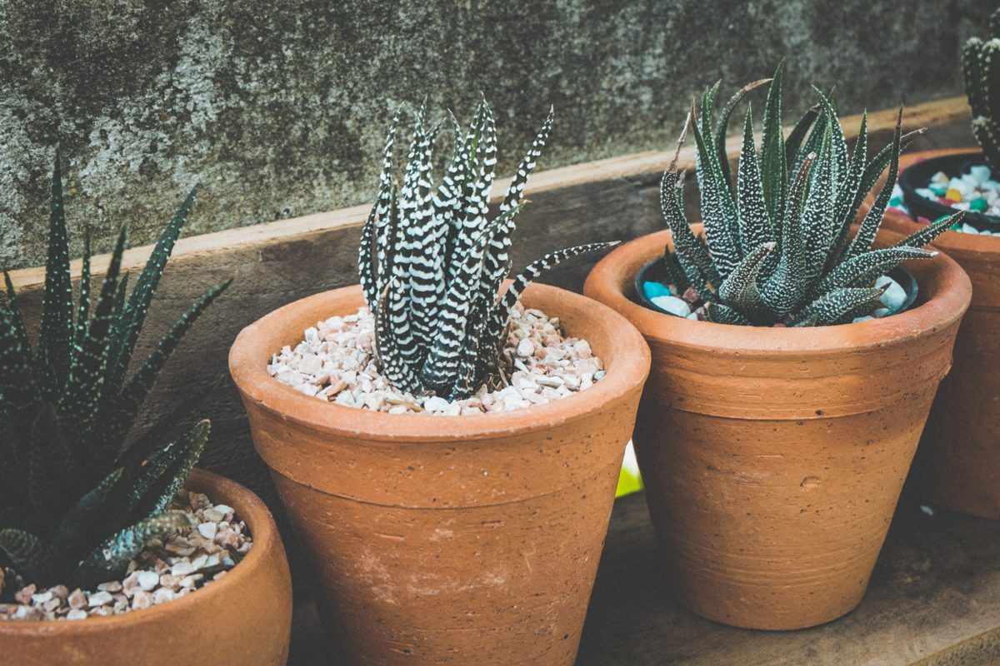

店のこと
確認できていること
お店について確認できているのは、所在地・電話番号・Instagramのアカウントだけです。「想像してみる」の部分は制作側の想像で、お店の実際の様子や考えとは関係がありません。
- 店名は「ライフスタイルカフェ」、業種はカフェ
- 所在地は沖縄県うるま市石川２３１６(〒904-1106)
- 電話番号は 080-6487-2316
- Instagramは @life_style_cafe.2021
- 営業時間・定休日・メニュー・価格・ご予約・駐車場は準備中
想像してみる
同じ五つのセルが、世代ごとに違う形になる
「ライフスタイル」という言葉から、暮らし方のかたちはひとつではない、という連想がふくらみました。ライフゲームには、わずか五つのセルが世代ごとに姿を変えながら斜めに進んでいく「グライダー」という形があります。同じ五つのセルでも、並び方が変わるたびに違う形に見えます。
- 第0世代
- 第1世代
- 第2世代
- 第3世代
- 第4世代


この試作のこと
お店に合わせて作り直します
テーマの「ライフゲームの五世代」は制作側の連想にすぎません。お店の理念・由来とは無関係です。ご採用いただく場合は、お店のご意向、写真、メニューに合わせてデザインも文章も作り直します。